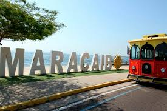
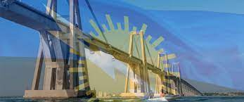
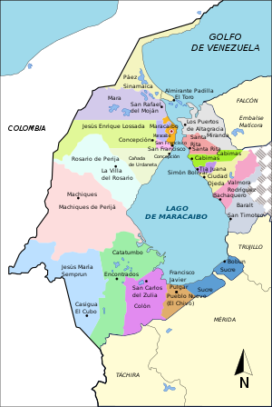
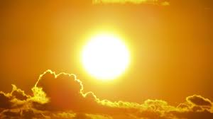

El estado Zulia es uno de los veintitrés Estados de Venezuela, Su capital es Maracaibo. Está ubicado al noroeste y limitando al norte con el Mar Caribe, al este con Falcón, Lara y Trujillo, al sureste con Mérida, al sur con Táchira y al oeste, desde la Península de La Guajira hasta las montañas de Perijá, con Colombia. Con 63 100 km².
Su territorio rodea el lago de Maracaibo, el cual es la masa de agua más extensa de Latinoamérica. La cuenca lacustre abarca una de las más grandes reservas de petróleo y gas del mundo. El Estado Zulia se divide en 21 municipios y 107 parroquias civiles. Sus principales ciudades son Maracaibo, San Francisco, Cabimas, Ciudad Ojeda, Santa Bárbara del Zulia, Rosario de Perijá, Machiques, La Concepción y Los Puertos de Altagracia.
Historia

Desde la mirada europea, el territorio del Zulia fue avistado en 1499 por una expedición comandada por Alonso de Ojeda. Durante la Colonia Española, sus tierras formaron parte de la Provincia de Venezuela hasta que en 1676, fueron agregados a la Provincia de Mérida del Espíritu Santo de la Grita, conocida más tarde como el Espíritu Santo de Maracaibo. Para 1786, esta abarcada por los territorios del Zulia, Apure, Barinas, Táchira, Mérida y Trujillo. En 1810, se separó de Mérida y Trujillo. Se mantiene fiel a la corona durante la guerra de independencia de Venezuela hasta el 28 de enero de 1821, fecha en que la provincia de Maracaibo decidió independizarse de España con la firma del Acta de Independencia por parte de los Regidores del Cabildo. En tiempos de la Gran Colombia desde 1824 recibió el nombre de departamento del Zulia. Al desaparecer la unión gran colombina en 1830, Maracaibo pasó a ser una de las 11 (once) Provincias de Venezuela.
Se conoce como Estado Zulia a partir de la Constitución Federal de Venezuela del 22 de abril de 1864,10 donde se cambió la denominación de Provincia a Estado Maracaibo con el territorio de la antigua Provincia. A finales de ese año la legislatura estatal determinó el cambio de nombre al de Estado Soberano del Zulia. En 1881 por disposición del gobierno federal se forma el estado Falcón-Zulia donde quedó definitivamente configurado con su estatus de Estado autónomo el 1 de abril de 1890, cuando el Congreso decretó la separación del estado Falcón-Zulia. Pero a finales del siglo XIX sufrió algunos cambios en su conformación, en 1899 se ordenó definitivamente la delimitación que posee en la actualidad.
Geografía

El estado Zulia abarca unos 63.100 km², incluyendo tierra firme y el lago de Maracaibo y parte del golfo de Venezuela, lo que representa aproximadamente el 6,90% de todo el territorio venezolano, siendo la quinta entidad de mayor superficie en Venezuela, luego de los estados Bolívar, Amazonas, Apure y Guárico.
Los límites del estado son, al norte el golfo de Venezuela, al sur, los estados Mérida y Táchira, al este Trujillo, Lara y Falcón y al oeste Colombia. El Zulia forma una amplia depresión tectónica, en cuyo centro se encuentra el lago de Maracaibo, y que está rodeada por dos ramales montañosos de la cordillera de los Andes: al oeste, la sierra de Perijá, que colinda con la República de Colombia, al sur la cordillera de Mérida, que se prolonga hacia el noreste en las estribaciones montañosas del estado Trujillo. En el extremo oriental se erige la Serranía del Empalado o sierra de Siruma que colinda con los estados Lara y Falcón.
Clima

El clima zuliano es cálido, con una temperatura promedio anual de 30 °C, las tierras bajas y con temperaturas templadas y hasta frías en las vertientes occidentales de la Sierra de Perijá. Las precipitaciones oscilan entre los 300 mm en La Guajira y los 4500 mm anuales en la Misión de El Tokuko, al suroeste del estado, donde el efecto orográfico de la Sierra de Perijá se ejerce sobre los vientos alisios del noreste, obligándolos a ascender, por lo que descargan la humedad que traen del mar, provocando el fenómeno ganador de Récord Guiness conocido como relámpago del Catatumbo, que se debe a las continuadas tormentas eléctricas en horas nocturnas: un fenómeno casi único en el mundo, sorprendente por su belleza y útil durante la Edad Moderna, ya que las embarcaciones que penetraban en el lago de Maracaibo podían orientarse de noche por el resplandor, motivo por el que también se conoce a este fenómeno, o más bien se conocía, como el "Faro de Maracaibo".